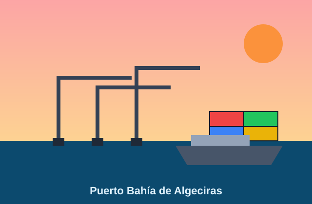

El Puerto Bahía de Algeciras es el principal puerto de España en tráfico de mercancías. Su situación en el Estrecho de Gibraltar lo hace ideal para el comercio entre continentes.

No se puede mostrar el PDF. Descárgalo aquí.
Fuente de los datos: Wikipedia, «Puerto de Algeciras»: https://es.wikipedia.org/wiki/Puerto_de_Algeciras
Volver al nivel 1